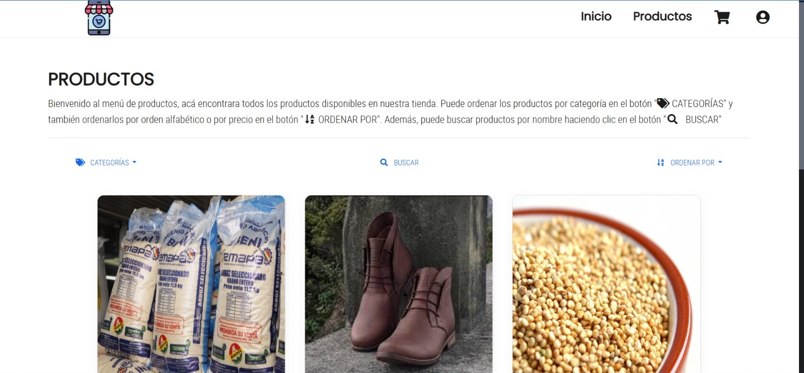
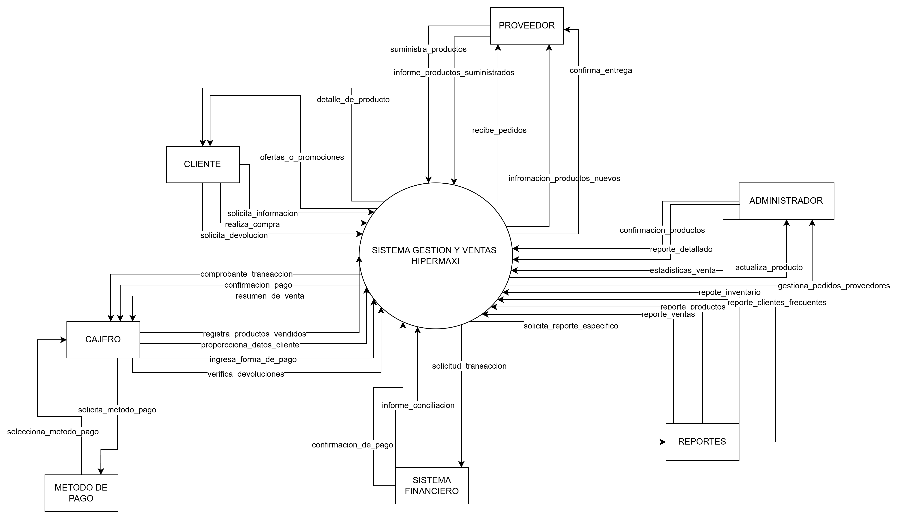

Análisis y Diseño de Sistema de Venta y Gestión de Productos Hipermaxi
El presente proyecto tiene como objetivo el desarrollo de un sistema de gestión integral para el supermercado "Hipermaxi". Este sistema permitirá optimizar las operaciones comerciales, facilitar la administración de inventarios, gestionar las ventas de productos y ofrecer un servicio más eficiente tanto a los empleados como a los clientes. Hipermaxi es una cadena de supermercados que cuenta con varias sucursales en la ciudad, y su misión es brindar productos de calidad a precios competitivos, mejorando la experiencia de compra en todo momento.
Objetivo
El objetivo principal de este proyecto es diseñar y desarrollar un sistema de gestión y ventas para el supermercado Hipermaxi, que permita automatizar la administración de inventarios, gestionar las ventas de manera eficiente y optimizar la relación con los proveedores. A través de este sistema, se busca mejorar la gestión operativa, reducir errores humanos, y brindar a los usuarios una plataforma intuitiva para manejar la información en tiempo real.
Alcance
El sistema cubrirá diversas funcionalidades clave para la correcta administración del supermercado. Las funciones principales incluyen:
Gestión de Ventas: Registro de transacciones, procesamiento de pagos y generación de facturas. Además, se integrará con el sistema de inventarios para actualizar las existencias de productos en tiempo real.
Administración de Proveedores: Gestión de relaciones con proveedores, pedidos y control de entregas. El sistema permitirá hacer seguimiento a los productos solicitados y sus tiempos de entrega.
Gestión de Inventarios: El sistema realizará un seguimiento detallado del stock de productos, alertando cuando los niveles sean bajos, y facilitando la reposición de productos. También se llevará un registro de las entradas y salidas de mercancía.
Tecnologías Utilizadas
El sistema será desarrollado utilizando las siguientes herramientas y tecnologías:
Lenguajes de Programación: PHP para el backend, HTML, CSS y JavaScript para el frontend.
Base de Datos: MySQL para almacenar la información del inventario, ventas, clientes y proveedores.
Otras Herramientas: Bootstrap para el diseño responsivo de la interfaz de usuario, asegurando que el sistema funcione correctamente en dispositivos de diferentes tamaños.
Imagen representativa del sistema de ventas y administración de productos

Imagen representativa de la gestión de inventarios
Marco Teórico - Supermercado Hipermaxi
Descripción General del Proyecto
El proyecto tiene como objetivo diseñar un sistema completo de gestión y administración de ventas para el supermercado Supermercado Hipermaxi, ubicado en la ciudad de La Paz, Bolivia. Este sistema está enfocado en optimizar el control de inventarios, la gestión de ventas, y la relación con proveedores, lo cual facilitará la operación eficiente del supermercado en sus 8 sucursales.
Objetivo
El propósito de este análisis y diseño del sistema es proveer una solución integral que permita gestionar de manera eficiente el inventario de productos, las ventas diarias y la interacción con proveedores, garantizando el abastecimiento adecuado y un flujo continuo de productos en las sucursales.
Alcance
El sistema abarcará varias funciones clave:
Gestión de Ventas: Control y registro de transacciones de ventas, con la capacidad de generar reportes detallados de las mismas.
Administración de Proveedores: Sistema de gestión de proveedores que permita realizar órdenes de compra de insumos y productos.
Control de Inventarios: Actualización automática de inventarios a medida que se realicen ventas, así como un sistema de alertas para reordenar productos cuando el stock sea bajo.
Información del Supermercado Hipermaxi
El Supermercado Hipermaxi se encuentra en Av. Arce NRO 2519 Condominio torres del poeta esq. plaza Isabel La Catolica, La Paz, Municipio Murillo, Bolivia. Con 5 sucursales en diferentes zonas de la ciudad, se dedica a ofrecer una amplia variedad de productos a sus más de 5,000 clientes registrados.
Categorías de Productos: Alimentos, bebidas, productos de limpieza, artículos de hogar.
Perfil de Clientes: Consumidores finales y pequeñas empresas qsue realizan compras al por mayor.
Relación con Proveedores: El supermercado mantiene relaciones continuas con proveedores nacionales e internacionales para garantizar la disponibilidad de productos.
Algunas imagenes de nuestras sucursales
Modelo Estructurado del Sistema para Supermercado Hipermaxi
¿Qué es el Análisis Estructurado?
El análisis estructurado es una metodología que permite descomponer sistemas complejos en partes simples y organizadas, facilitando su diseño y documentación. Su enfoque principal es garantizar que los procesos y datos sean consistentes y estén alineados con los objetivos del sistema.
Modelo Ambiental
El modelo ambiental define el alcance del sistema y su interacción con los agentes externos. Incluye los objetivos clave, los eventos principales que activan procesos y las relaciones con otras entidades.
Declaración de Propósitos (DP): Este modelo tiene como objetivo garantizar una gestión eficiente del inventario, procesar ventas con rapidez y mantener un registro actualizado de clientes y proveedores.
Lista de Acontecimientos (LA): Los eventos incluyen:
Registro de nuevos productos en el inventario.
Actualización de cantidades en stock después de cada venta.
Generación de reportes mensuales de ventas y stock.
Notificación automática al administrador sobre niveles bajos de inventario.
Diagrama de Contexto (DC):
Representa cómo el sistema interactúa con los agentes externos. Los principales actores son:
Clientes: Realizan compras y reciben comprobantes de pago.
Administradores: Gestionan el inventario y supervisan las ventas.
Proveedores: Suministran productos al sistema.
Sistema de Inventario: Registra y actualiza el stock en tiempo real.
Modelo de Comportamiento
El modelo de comportamiento describe los flujos internos del sistema, las relaciones entre las entidades principales y los datos que se procesan durante la operación del supermercado.
Diagrama de Flujo de Datos (DFD): Representa cómo la información fluye entre los procesos del sistema.
Diagrama Entidad/Relación (DER): Describe las conexiones entre las entidades principales: Productos, Clientes, Administradores y Proveedores.
Diagrama de Datos (DD): Detalla la estructura de los datos, como ID de productos, categorías y niveles de inventario.
Diagrama de Transacciones (DTS): Muestra los procesos clave, como agregar productos al inventario y registrar ventas.
Modelo Ambiental
¿Qué es un modelo ambiental?
El modelo ambiental es una representación conceptual del entorno de un sistema que describe cómo interactúa este con los diferentes actores (personas u otros sistemas) externos. Este modelo ayuda a identificar las entradas y salidas principales del sistema, los actores involucrados y las relaciones entre ellos. El modelo ambiental se centra en qué hace el sistema y no en cómo lo hace.
Por lo general, el modelo ambiental incluye:
Declaración de propósito: Explica el objetivo principal del sistema.
Lista de acontecimientos: Enumera las interacciones o eventos clave que se generan entre el sistema y los actores externos.
Diagrama de contexto: Representa gráficamente las conexiones de entradas y salidas entre el sistema y sus actores externos.
Para qué sirve un modelo ambiental?
Delimitar el alcance del sistema: Define claramente los límites del sistema, identificando qué es parte de este y qué pertenece al entorno externo.
Entender las interacciones clave: Ayuda a comprender qué información fluye hacia el sistema (entradas) y qué genera como resultado (salidas).
Facilitar la comunicación entre equipos: Es una herramienta visual útil para explicar el propósito y las funciones del sistema a los interesados (clientes, desarrolladores, diseñadores, etc.).
Guiar el diseño y desarrollo del sistema: Actúa como base para la planificación de los procesos internos y el diseño de la arquitectura del software.
Evitar confusiones: Asegura que todas las partes involucradas entiendan los límites y las funciones del sistema, reduciendo malentendidos durante el desarrollo.
En resumen, el modelo ambiental nos proporciona una visión clara del contexto del sistema, siendo el primer paso fundamental para su diseño y desarrollo.
Modelo Ambiental para nuestro sistema
a) DECLARACIÓN DE PROPÓSITOS:
El sistema tiene como objetivo principal gestionar las operaciones de venta y el control de inventarios en el supermercado Hipermaxi. Esto incluye la administración de productos, precios, existencias, compras de clientes, proveedores, ofertas y reportes de ventas. Además, permite mejorar la experiencia del cliente, optimizar los procesos internos y asegurar la disponibilidad de productos.
b) LISTA DE ACONTECIMIENTOS:
Eventos relacionados con las ventas:
Un cliente selecciona productos para comprar.
Un cliente realiza el pago en caja.
Se genera un comprobante de venta.
Se realiza una devolución de producto por parte del cliente.
Eventos relacionados con la gestión de inventarios:
El inventario de un producto disminuye tras la venta.
Un empleado actualiza las existencias de un producto.
Se realiza el ingreso de un nuevo producto al sistema.
Se detecta un producto con stock mínimo y se notifica al proveedor.
Eventos relacionados con proveedores:
Se realiza un pedido de reposición de productos a un proveedor.
Se registra la recepción de un pedido de un proveedor.
Eventos relacionados con ofertas y promociones:
Un administrador define una oferta o descuento para un producto.
Se actualizan los precios de productos en oferta.
Diagrama de Contexto

Diagrama de Contexto
Modelo de Comportamiento
Detalles sobre el modelo de comportamiento del análisis estructurado.
Modelo Implementación
Información sobre el modelo de implementación del análisis estructurado.
Modelado Orientado a Objetos
Contenido relacionado con el modelado orientado a objetos y su aplicación.
Video tutorial del Sistema de Gestión de Productos - Hipermaxi
En este tutorial, te mostraremos el funcionamiento del sistema que estamos implementando para la gestión de ventas y administración de productos en el supermercado Hipermaxi.
A través de este video, podrás entender cómo interactúan los distintos módulos del sistema, desde el registro de productos hasta el control de inventarios y las ventas en tiempo real.